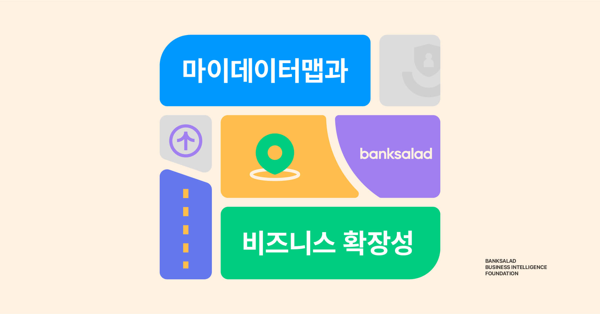
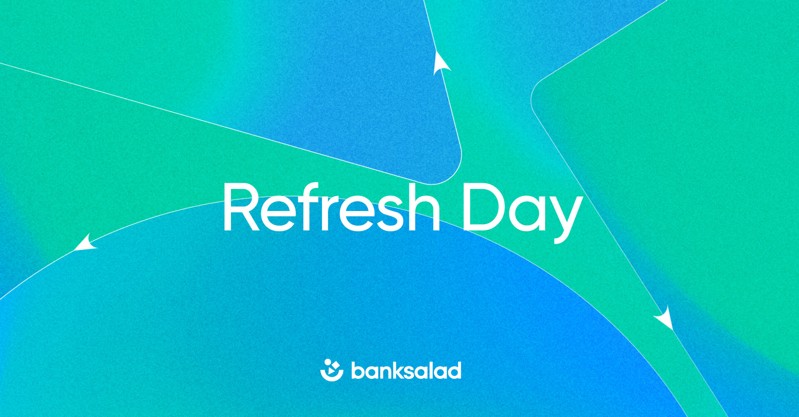
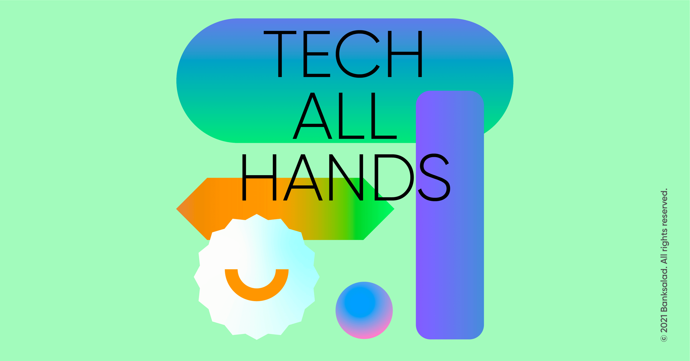
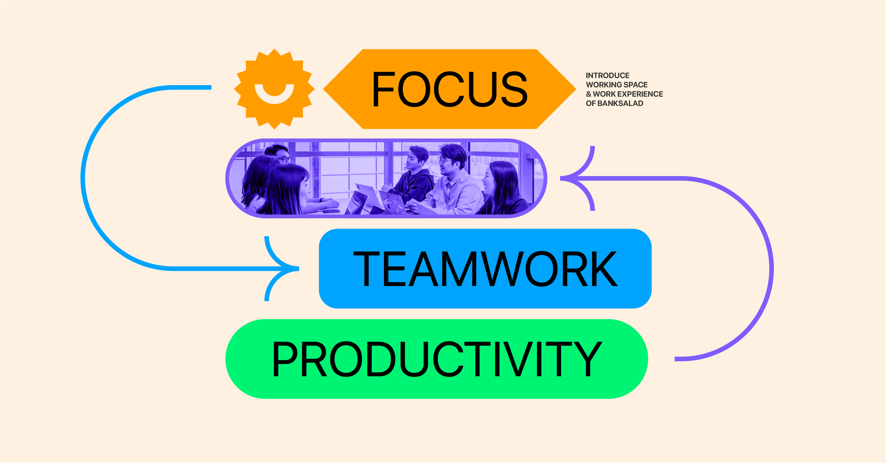
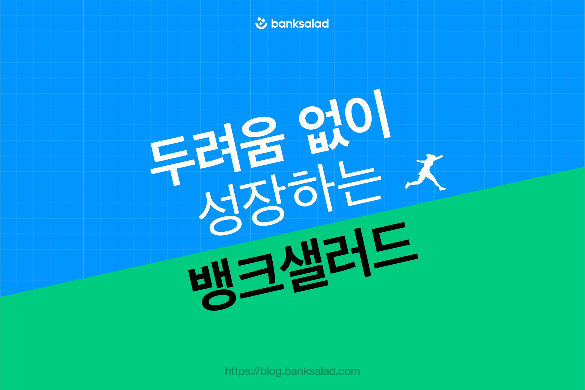
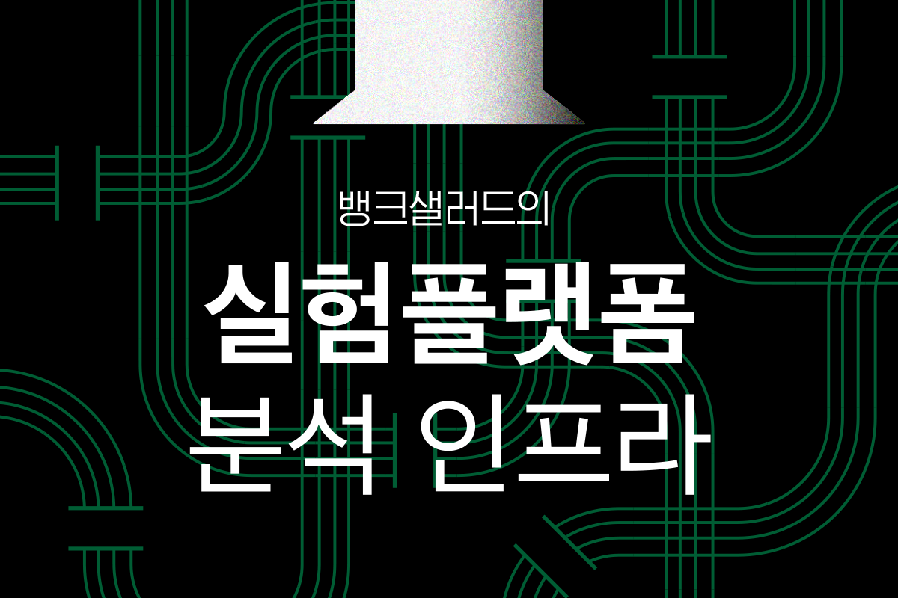
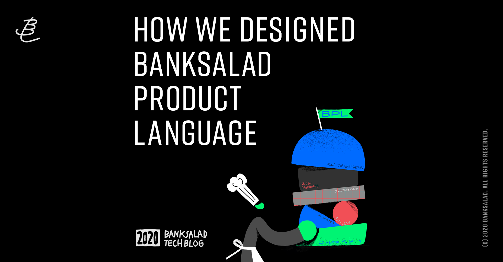
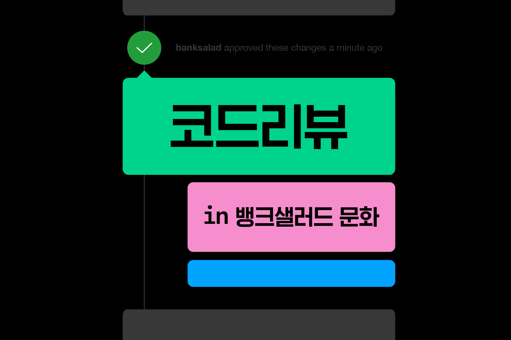

EMPOWERING PEOPLE WITH DATA
TO MAKE A BETTER LIFE
내게 맞는 금융상품, 비교하기 힘드시죠?
뱅크샐러드는 쉽고 정확하게 비교합니다.
우린 세상을 바라보는
시각을 공유하며
세상과 적극적으로
소통합니다.
-
CULTURE BLOG
마이데이터 맵과 비즈니스 확장성
뱅크샐러드가 일하는 방식의 핵심지식으로서, 마이데이터 시장을 조망하는 마이데이터맵을 제안하고 이를 활용한 마이데이터기반 디지털플랫폼의 성장 방정식을 논의한다.
2022년 07월 13일
-
CULTURE BLOG
구성원이 재충전의 시간을 갖는 다양한 방법
직장인이라면 한 번쯤 걸린다는 ‘월요병’. 출근하는 사람들로 북적이는 월요일 오전, 평화롭게 늦잠을 자는 상상을 하게 하죠. 6월의 마지막 주만큼은 뱅크샐러드 구성원 모두 월요병에서 벗어날 수 있었습니다. 바로 지난 6월 2…
2022년 07월 11일
-
CULTURE BLOG
Tech All Hands, 뱅크샐러드 개발 아고라
혹시 Tech All Hands에 대해서 들어보신 분 계신가요? Tech All Hands는 뱅크샐러드 개발자들이 한 데 모여 개발 프로젝트 진행 상황에 대해 공유하고, 서로 궁금했던 점을 해소하는 정기적인 행사입니다.
2022년 07월 08일
-
CULTURE BLOG
뱅크샐러드 오피스 투어 [업무공간 편]
이미 여러 매체를 통해 소개된 뱅크샐러드 오피스. 여의도 전경을 내려다보는 환상적인 뷰로 많은 분들의 눈길을 사로잡았죠. 남산을 눈높이에서 바라보며 일하는 사무실이라니, 고급 호텔이 부럽지 않습니다.
2022년 07월 06일
-
TECH BLOG
두려움 없이 성장하는 뱅크샐러드
“테크 리드라고요? 어떤 일을 하는 직무죠?” 이런 의문이 들 수 있을 것 같습니다. 저는 테크 리드를 이렇게 정의하고 있습니다. ‘기술적 의사결정을 담당하고 책임을 지는 사람’.
2022년 07월 04일
-
TECH BLOG
뱅크샐러드의 실험플랫폼 분석 인프라 살펴보기
뱅크샐러드는 실험을 통해 제품을 개선하는 노력이 실제로 사용자에게 더 좋은 경험으로 이어지는지 매일매일 데이터를 통해 검증해나가고 있습니다. 여기서 말하는 실험(A/B Test, Online Controlled Experiment…
2022년 07월 02일
-
TECH BLOG
Banksalad Product Language는 어떻게 디자인되었나요?
뱅크샐러드에 합류 한 후부터 지금까지 주변 디자이너분들에게 Product Language에 관한 질문을 많이 받아 왔는데요, 아직도 국내에서는 Product Language라는 개념이 다소 생소한 것 같습니다. 저도 처음 Product Language…
2022년 06월 30일
-
TECH BLOG
코드 리뷰 in 뱅크샐러드 개발 문화
코드 리뷰란 개발자가 작성한 코드를 다른 사람들이 검토하고 피드백을 전달하며, 다시 작성자가 반영하는 과정을 말합니다.
2022년 06월 30일